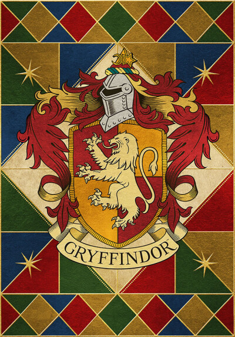
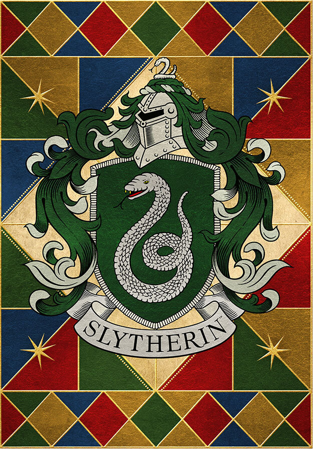
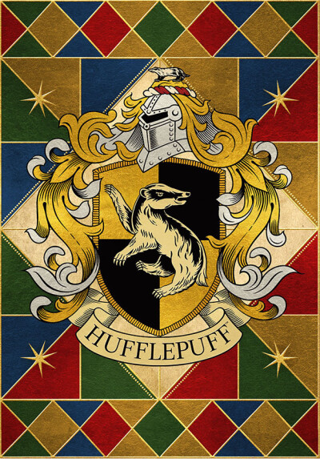
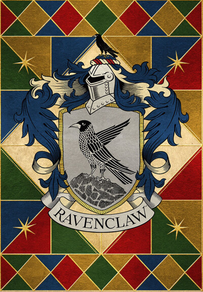

格兰芬多
Gryffindor

格兰芬多学院始建于9世纪。以创办人戈德里克·格兰芬多的姓氏命名的。这个学院培养出了诸如哈利的父母，邓布利多校长等优秀的巫师和女巫。格兰芬多代表动物狮子，万兽之王，勇敢和冒险的象征。
返回顶部
斯莱特林
Slytherin

斯莱特林创始人为四巨头之一的萨拉查·斯莱特林，学院传统是“有野心，精明，重视荣誉，审时度势，明哲保身，胜利至上”。在互联网中常被称为“蛇院”。象征色是绿色、银色。
返回顶部
赫奇帕奇
Hufflepuff

赫奇帕奇以特别擅长与食物有关的魔咒而闻名，也许是霍格沃茨魔法学校的四大学院里拥有学生最多，最好心的学院了。赫奇帕奇学院招生标准是具有勤劳忠诚的品质，并且对待他们一视同仁。獾（badger）是挖洞的食肉目鼬科动物。在《柳林风声》这部童话中，就塑造了一个老实、忠厚的獾的形象，而J.K.罗琳女士在小时候对这本书爱不释手。
返回顶部
拉文克劳
Ravenclaw

拉文克劳代表的含义是对知识的渴求。拉文克劳是由罗伊纳·拉文克劳创立，以智慧聪敏作择生条件。“拉文克劳”直译就是“渡鸦之爪”，而且拉文克劳创办者遗物是“拉文克劳的冠冕”，是罗伊纳·拉文克劳的唯一一件已知的遗物，其可以增加佩带者的智慧。在系列电影《哈利波特》中那冠冕是一顶镶有宝石的，闪闪发光的王冠。王冠的底边上刻着拉文克劳著名的格言“过人的智慧是人类最大的财富”。
返回顶部